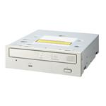
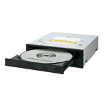

|
|
||
|  | ||
|  | ||
|
All software on this site is provided without warranty. All risk is that of the user. If you have problems with this software, please search for answers at http://forum.rpc1.org before posting. DVRFlash v2.7.5 Distribution: This software is free. It is not for distribution for profit or donation! All copyrights of this software are held by Agent Smith and authorized agents of rpc1.org. Any distribution of this software must include all included documents, give credit to the copyright holders and no request for payment of any sort. This software is not endorsed by Pioneer, Microsoft, Apple or any other distributor of Pioneer equipment. All risk involved in the use of this software is left entirely with the user. Please read instructions carefully. General Notes: This utility will allow you to flash a Pioneer DVR drive (or compatible) with a relevant firmware, and to escape the various restrictions set by Pioneer with their UPGDVD flashing tools. The following versions of DVRFlash are available: DOS/DPMI version (USE A DOS BOOTDISK!!!) Linux/x86 version Mac OS X version (Universal Binary for PPC & Intel) Windows, *ALL* versions (Windows 95/98/Me/2000/XP/2003/Vista) Usage: The basic usage of DVRFlash is: DVRFlash [flags] [device] [firmware file(s)] Please make sure that the firmware files are in the current directory or use the proper path to the files. Please reference the specific ReadMe file included with each version for platform specific instructions. Technical information: DVRFlash is based on fPLScsi (http://nil.rpc1.org) which is a forked version of Pat LaVarre's excellent PLScsi. For more information on how device usage, have a look at the PLScsi's documentation on: http://members.aol.com/plscsi/ Changes in v2.7.5 New features: - DVRKD08 support - DVRTD08 support Updated release package, now including DOS,Win32,Linux,Mac binaries. Changes in v2.7.3 Bug fix: - fixed DVR-117F/217F support Current release has Win32 binaries only. Changes in v2.7.2 New features: - DVR-117 support - DVR-217 support Win32 binaries only. Changes in v2.6.0 Adding current drives release New features: - DVR-116 support - DVR-216 support Changes in v2.5.1 Bugfix release New features: - prevented to flash wrong interface type firmware (PATA/SATA mismatch) - added -l option to list non Pioneer drives Fixes: - Fixed MAC drive detection problem occuring when several drives are connected - Fixed MAC problem with 'a:' style drive access - Added readme files from v2.2 release Known problems: - DOS version not tested yet Changes in v2.5 Adding current drives release New features: - DVR-111 support - DVR-112 support - DVR-115 support - DVR-212 support - DVR-215 support - Additional check sum test Fixes: - Major internal cleanup Known problems: - DOS version not tested yet - Linux version not used for flashing yet, drive detection works fine - MAC version seems to have drive detection problems if several internal and external drives are connected. v2.2 and probably all previous releases have the same problem DVRFlash v2.7.5 (All Platforms) | ||
| 465KB | ||
|
Old version downloads
DVRFlash v2.7.3 All Platforms 48KB DVRFlash v2.7.2 All Platforms 48KB DVRFlash v2.6.0 All Platforms 464KB DVRFlash v2.5.1 All Platforms 463KB DVRFlash v2.5 All Platforms 466KB DVRFlash v2.2 All Platforms 484KB DVRFlash v2.2 DOS 124KB DVRFlash v2.2 Linux x86 268KB DVRFlash v2.2 Mac OS X 48KB DVRFlash v2.2 Win32 60KB DVRFlash v2.2 Mac OS X 10.3 Not Universal Binary 26KB DVRFlashX v2.1 Mac only 340KB DVRFlashX Apple 107 Mac only 2.3MB DVRFlashX Apple 106 Mac only 2.4MB DVRFlashX Apple 105 Mac only 2.3MB DVRFlashX Apple 104 Mac only 2.3MB DVRFlashX Apple 103 Mac only 2.3MB Thanks to Las Vegas, for maintaining and hosting the DVRFlash v2.x originally Visits since March 8, 2008 |
||